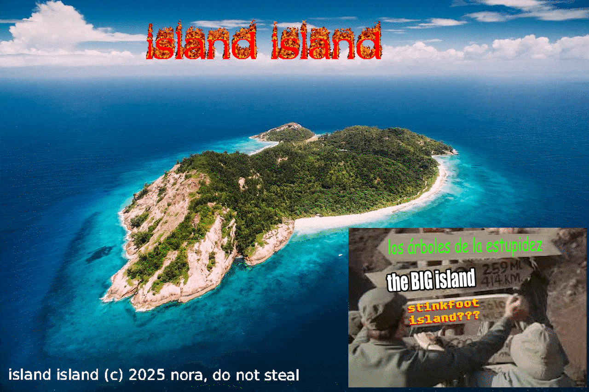

scroll down for more information please!
Welcome to the Island island information page!
This is the information page for the Island island. Here you can find information about the Island Island.
The Island island is a small island in the middle of the ocean. It is home to a small population of people who live on the island.
Statistics:
| Population |
~5 |
| Area |
~500 ft2 |
| Currency |
Island Island Dollar |
| Language |
English |
| Government |
Island Island Government |
| Timezone |
EDT (UTC-4) |
| Climate |
Tropical |
| Flag |
None yet, please submit a design at the information desk! |
News:
- 2024-10-15: Community fishing cooperative reports successful tuna season, with 50% increase in catch compared to last year
- 2024-10-12: Island council approves solar panel installation for the community center, expected completion by December
- 2024-10-08: Annual Island Island Festival attracts visitors from neighboring islands, featuring local crafts and traditional music
- 2024-10-05: New desalination plant comes online, providing fresh water security for the island's growing population
- 2024-10-01: Local school announces expansion plans, adding computer lab with funding from mainland education grant
This site is hosted as a courtesy of the Island Island Internet Exchange (I3X). NO HOTLINKING! our bandwidth is limited due to tenuous peering agreements.